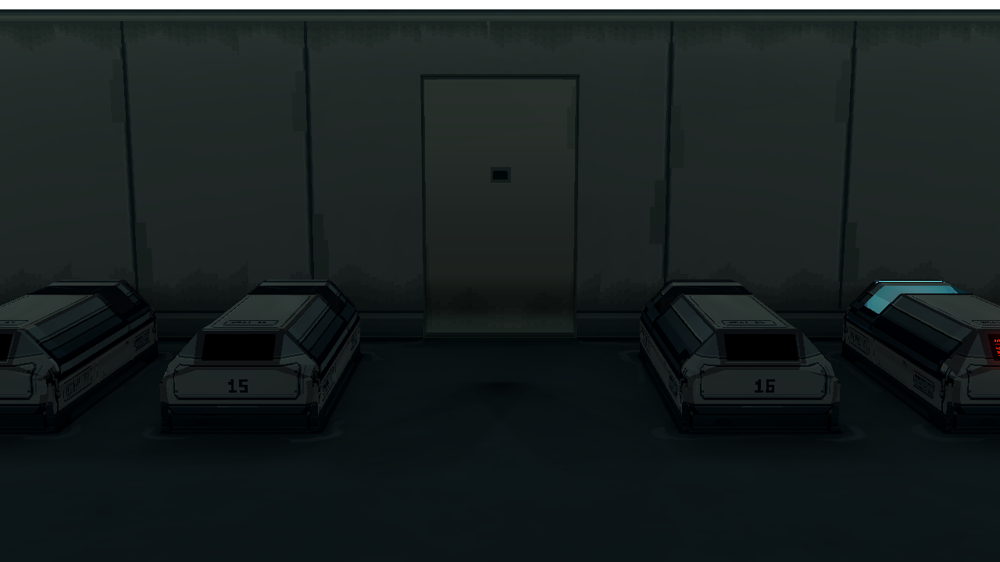
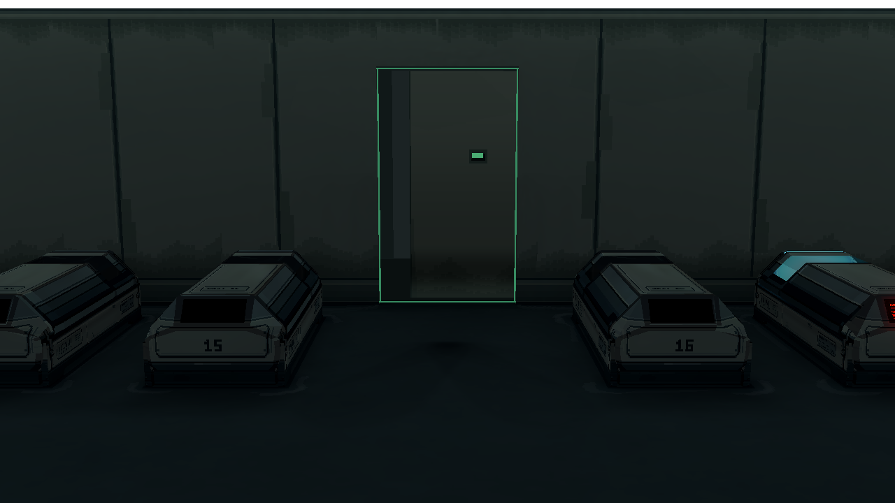

Room 1 主门：v4 明度测试已退回
同一 Godot 镜头、画面比例及 1280 × 720 分辨率。v4 的门板整体过亮，门底手工提亮与熄灯时可见的下沿灯槽叠加，出现不自然的发光感。后续从 v3 色阶继续，不使用 v4 作为当前门方案。
关门 · 待机
 A · v3：近黑色门侧与门底
A · v3：近黑色门侧与门底
B · v4（退回）：门面过亮；门底像在发光
授权开门 · 同一时刻
 A · v3：原有开门效果
A · v3：原有开门效果
B · v4：门叶边侧跟随材质色，绿灯仍在门框内侧
其他状态：[认证黄闪](evidence/yellow_scanning.png) · [完全打开](evidence/green_open.png) · [拒绝时仅状态窗红色](evidence/red_denied_window_only.png)。